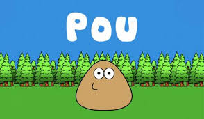

Pou es un videojuego del género de mascotas virtuales desarrollado por Paul Salameh (mencionado como Zakeh en Google Play Store). Fue lanzado para BlackBerry, iOS y Android, y fue traducido en 16 idiomas. Su concepto es similar al de Tamagotchi, una mascota virtual creada en 1996 en Japón. Se lanzo un 5 de agosto de 2012 en Play Store.
RESEÑA ANONIMA:
Es un tamagotchi actualizado que da ratos de diversión para toda la familia. Tanto yo como mis hijos nos hemos aficionado a darle de comer, limpiarle... esas cosas tan simples. Jugando a los juegos consigues monedas y con ellas compras ropas, comida.
CALIFICACIÓN: 4 de 5 estrellas
